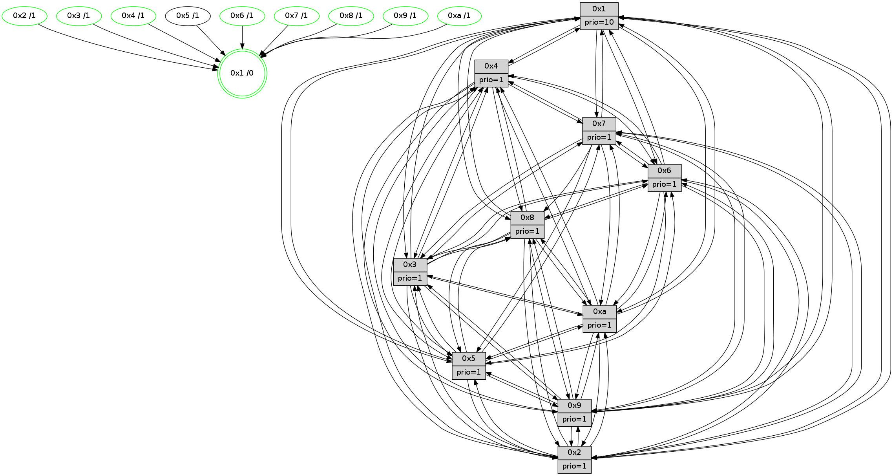

>> << IDX [start] -100 -25 -5 +0 +5 +25 +100 [1425.36937809]
 Previous packets
----------------------------------------------------------------------
1420.640595 beacon01(faad) #0 coord=01,02,03,04,05,06,07,0a,09,08 cycle=688.0ms assoc
-- color-indic=1 64 da dd
1420.650578 beacon02(faad) #0 coord=01,02,03,04,05,06,07,0a,09,08 cycle=688.0ms assoc 64 49 ec
1420.660578 beacon03(faad) #0 coord=01,02,03,04,05,06,07,0a,09,08 cycle=688.0ms assoc 64 33 a1
1420.670579 beacon04(faad) #0 coord=01,02,03,04,05,06,07,0a,09,08 cycle=688.0ms assoc 64 44 4b
1420.680579 beacon05(faad) #0 coord=01,02,03,04,05,06,07,0a,09,08 cycle=688.0ms assoc 64 3e 06
1420.690579 beacon06(faad) #0 coord=01,02,03,04,05,06,07,0a,09,08 cycle=688.0ms assoc 64 b0 d1
1420.700579 beacon07(faad) #0 coord=01,02,03,04,05,06,07,0a,09,08 cycle=688.0ms assoc 64 ca 9c
1420.710585 beacon0a(faad) #0 coord=01,02,03,04,05,06,07,0a,09,08 cycle=688.0ms assoc 64 bb 97
1420.730585 beacon08(faad) #0 coord=01,02,03,04,05,06,07,0a,09,08 cycle=688.0ms assoc 64 4f 0d
1420.742794 [Hello(1): seq=815 sym=4,2,9,5,10,3,8,6,7 sysInfo=coloring-mode-on,ColoringModeRequestCalled stat=4:12,13,11,4/2:14,2,5,5/9:13,7,6,2/5:14,6,7,9/10:14,9,8,8/3:3,0,8,11/8:11,5,7,4/6:5,11,6,2/7:13,11,13,2]
1420.745750 [Hello(5): seq=906 sym=7,6,4,3,1,9,8,10,2 sysInfo=hasWarning stat=7:7,3,0,1/6:7,13,15,5/4:12,9,7,0/3:11,11,12,2/1:0,1,1,0/9:13,5,0,11/8:10,1,6,5/10:14,2,5,9/2:15,10,11,7]
1420.748474 [Hello(3): seq=906 sym=1,7,6,4,8,9,10,5 sysInfo=hasWarning stat=1:10,7,14,0/7:9,13,14,15/6:0,11,7,2/4:0,5,1,14/8:1,13,8,6/9:14,10,12,1/10:4,5,2,5/5:7,2,15,1]
1420.751165 [Hello(2): seq=902 sym=4,5,7,6,3,9,8,10,1 sysInfo=hasWarning stat=4:7,0,10,14/5:0,10,1,3/7:6,14,13,2/6:0,2,1,1/3:6,10,2,0/9:11,14,8,10/8:7,13,7,13/10:6,4,7,11/1:5,11,6,0]
1420.753986 [STC(4)->1 #0.245 tree-change,inconsistent-stability,stable,to-color d=1]
1420.755454 [Hello(6): seq=906 sym=3,5,4,7,9,8,10,1 asym=2 sysInfo=hasWarning stat=3:3,8,3,0/5:2,5,6,4/4:11,13,11,9/7:1,0,7,0/9:3,11,15,11/8:10,6,1,7/10:12,1,7,13/1:15,12,11,1/2:5,9,3,0]
1420.758907 [STC(2)->1 #0.245 tree-change,inconsistent-stability,stable,to-color d=1]
1420.760278 [STC(6)->1 #0.245 tree-change,inconsistent-stability,stable,to-color d=1]
1420.762753 [STC(5)->1 #0.245 to-color d=1]
1420.764667 [Color(9) seq=465 @0:0 prio=1]
1420.765895 [Color(6) seq=538 @0:0 prio=1]
1420.768281 [STC(10)->1 #0.245 tree-change,inconsistent-stability,stable,to-color d=1]
1420.769607 [STC(8)->1 #0.245 tree-change,inconsistent-stability,stable,to-color d=1]
1420.770868 [Color(10) seq=495 @0:0 prio=1]
1420.773197 [STC(3)->1 #0.245 tree-change,inconsistent-stability,stable,to-color d=1]
1420.775650 [Color(2) seq=482 @0:0 prio=1]
1420.777067 [Color(3) seq=535 @0:0 prio=1]
----------------------------------------------------------------------
1421.428727 beacon01(faad) #0 coord=01,02,03,04,05,06,07,0a,09,08 cycle=688.0ms assoc
-- color-indic=1 64 66 d8
1421.438709 beacon02(faad) #0 coord=01,02,03,04,05,06,07,0a,09,08 cycle=688.0ms assoc 64 f5 e9
1421.448708 beacon03(faad) #0 coord=01,02,03,04,05,06,07,0a,09,08 cycle=688.0ms assoc 64 8f a4
1421.458710 beacon04(faad) #0 coord=01,02,03,04,05,06,07,0a,09,08 cycle=688.0ms assoc 64 f8 4e
1421.468711 beacon05(faad) #0 coord=01,02,03,04,05,06,07,0a,09,08 cycle=688.0ms assoc 64 82 03
1421.478710 beacon06(faad) #0 coord=01,02,03,04,05,06,07,0a,09,08 cycle=688.0ms assoc 64 0c d4
1421.488710 beacon07(faad) #0 coord=01,02,03,04,05,06,07,0a,09,08 cycle=688.0ms assoc 64 76 99
1421.498714 beacon0a(faad) #0 coord=01,02,03,04,05,06,07,0a,09,08 cycle=688.0ms assoc 64 07 92
1421.518716 beacon08(faad) #0 coord=01,02,03,04,05,06,07,0a,09,08 cycle=688.0ms assoc 64 f3 08
1421.530886 [Hello(10): seq=839 sym=6,2,3,8,7,5,9,4,1 sysInfo=hasWarning stat=6:5,5,3,5/2:0,14,6,0/3:7,13,11,15/8:7,13,4,4/7:14,4,1,10/5:13,13,14,1/9:7,10,3,1/4:2,11,13,3/1:14,10,6,1]
1421.533617 [Color(1) seq=586 @0:0 prio=10]
1421.535393 [Hello(7): seq=906 sym=2,3,5,6,4,8,9,10,1 sysInfo=hasWarning stat=2:4,4,11,4/3:12,11,14,3/5:11,7,13,3/6:11,8,11,12/4:3,1,10,2/8:0,1,1,0/9:0,14,10,2/10:10,11,3,7/1:4,14,6,0]
1421.540455 [Color(7) seq=434 @0:0 prio=1]
1421.545252 [Hello(8): seq=850 sym=5,2,3,7,9,6,4,10,1 sysInfo=hasWarning stat=5:8,10,8,1/2:15,14,2,12/3:8,15,8,4/7:14,8,3,2/9:10,5,10,5/6:15,14,2,0/4:9,2,5,2/10:5,3,0,5/1:12,13,11,0]
1421.550329 [Color(8) seq=505 @0:0 prio=1]
1421.555631 [Hello(4): seq=906 sym=5,8,6,2,3,9,7,10,1 sysInfo= stat=5:7,6,10,2/8:5,11,3,1/6:1,5,4,0/2:10,6,12,1/3:13,1,5,15/9:6,10,0,2/7:14,9,2,0/10:14,4,5,14/1:7,6,10,1]
1421.559717 [Color(4) seq=445 @0:0 prio=1]
----------------------------------------------------------------------
1422.216859 beacon01(faad) #0 coord=01,02,03,04,05,06,07,0a,09,08 cycle=688.0ms assoc
-- color-indic=1 64 a2 d6
1422.226842 beacon02(faad) #0 coord=01,02,03,04,05,06,07,0a,09,08 cycle=688.0ms assoc 64 31 e7
1422.236842 beacon03(faad) #0 coord=01,02,03,04,05,06,07,0a,09,08 cycle=688.0ms assoc 64 4b aa
1422.246843 beacon04(faad) #0 coord=01,02,03,04,05,06,07,0a,09,08 cycle=688.0ms assoc 64 3c 40
1422.256842 beacon05(faad) #0 coord=01,02,03,04,05,06,07,0a,09,08 cycle=688.0ms assoc 64 46 0d
1422.266841 beacon06(faad) #0 coord=01,02,03,04,05,06,07,0a,09,08 cycle=688.0ms assoc 64 c8 da
1422.276843 beacon07(faad) #0 coord=01,02,03,04,05,06,07,0a,09,08 cycle=688.0ms assoc 64 b2 97
1422.286847 beacon0a(faad) #0 coord=01,02,03,04,05,06,07,0a,09,08 cycle=688.0ms assoc 64 c3 9c
1422.306849 beacon08(faad) #0 coord=01,02,03,04,05,06,07,0a,09,08 cycle=688.0ms assoc 64 37 06
1422.318750 [Hello(1): seq=816 sym=4,2,9,5,10,3,8,6,7 sysInfo=coloring-mode-on,ColoringModeRequestCalled stat=4:13,14,12,4/2:15,3,6,5/9:13,8,6,2/5:15,6,8,9/10:15,10,9,8/3:4,1,9,11/8:12,6,8,4/6:6,12,7,2/7:14,12,13,2]
1422.322518 [Hello(3): seq=907 sym=1,7,6,4,8,9,10,5 sysInfo=hasWarning stat=1:11,8,14,0/7:10,14,14,15/6:0,11,7,2/4:1,6,1,14/8:2,14,8,6/9:14,10,12,1/10:5,5,2,5/5:8,2,15,1]
1422.325648 [Color(9) seq=466 @0:0 prio=1]
1422.328191 [Color(10) seq=496 @0:0 prio=1]
1422.329503 [Color(3) seq=536 @0:0 prio=1]
1422.331115 [Hello(6): seq=907 sym=3,5,4,7,9,8,10,1 asym=2 sysInfo=hasWarning stat=3:3,9,4,0/5:3,5,6,4/4:12,14,11,9/7:2,1,7,0/9:3,11,15,11/8:11,7,2,7/10:13,2,8,13/1:0,13,11,1/2:5,10,3,0]
1422.335913 [Color(6) seq=539 @0:0 prio=1]
1422.338083 [Hello(2): seq=903 sym=4,5,7,6,3,9,8,10,1 sysInfo=hasWarning stat=4:8,1,10,14/5:1,10,1,3/7:7,15,13,2/6:0,2,1,1/3:6,11,2,0/9:11,14,8,10/8:8,14,7,13/10:7,4,7,11/1:6,12,6,0]
1422.342401 [Hello(5): seq=907 sym=7,6,4,3,1,9,8,10,2 sysInfo=hasWarning stat=7:8,4,0,1/6:7,14,15,5/4:13,10,7,0/3:11,12,13,2/1:0,2,1,0/9:13,6,0,11/8:11,2,7,5/10:14,3,6,9/2:15,11,11,7]
1422.347758 [Color(2) seq=483 @0:0 prio=1]
----------------------------------------------------------------------
1423.004989 beacon01(faad) #0 coord=01,02,03,04,05,06,07,0a,09,08 cycle=688.0ms assoc
-- color-indic=1 64 1e d3
1423.014971 beacon02(faad) #0 coord=01,02,03,04,05,06,07,0a,09,08 cycle=688.0ms assoc 64 8d e2
1423.024972 beacon03(faad) #0 coord=01,02,03,04,05,06,07,0a,09,08 cycle=688.0ms assoc 64 f7 af
1423.034973 beacon04(faad) #0 coord=01,02,03,04,05,06,07,0a,09,08 cycle=688.0ms assoc 64 80 45
1423.044972 beacon05(faad) #0 coord=01,02,03,04,05,06,07,0a,09,08 cycle=688.0ms assoc 64 fa 08
1423.054972 beacon06(faad) #0 coord=01,02,03,04,05,06,07,0a,09,08 cycle=688.0ms assoc 64 74 df
1423.064973 beacon07(faad) #0 coord=01,02,03,04,05,06,07,0a,09,08 cycle=688.0ms assoc 64 0e 92
1423.074977 beacon0a(faad) #0 coord=01,02,03,04,05,06,07,0a,09,08 cycle=688.0ms assoc 64 7f 99
1423.094977 beacon08(faad) #0 coord=01,02,03,04,05,06,07,0a,09,08 cycle=688.0ms assoc 64 8b 03
1423.106200 [Hello(10): seq=840 sym=6,2,3,8,7,5,9,4,1 sysInfo=hasWarning stat=6:6,6,3,5/2:1,15,6,0/3:7,14,11,15/8:8,14,4,4/7:15,5,1,10/5:14,13,14,1/9:7,10,3,1/4:3,12,13,3/1:15,11,6,1]
1423.108897 [Hello(9): seq=851 sym=2,5,3,4,7,6,8,10,1 sysInfo=hasWarning stat=2:4,10,2,11/5:6,10,2,8/3:3,15,13,4/4:13,9,8,3/7:12,3,10,5/6:3,1,1,15/8:11,1,9,7/10:13,2,6,0/1:0,10,9,1]
1423.111618 [Hello(7): seq=907 sym=2,3,5,6,4,8,9,10,1 sysInfo=hasWarning stat=2:5,5,11,4/3:13,12,14,3/5:12,7,13,3/6:12,9,11,12/4:4,2,10,2/8:1,2,1,0/9:0,15,10,2/10:11,12,3,7/1:5,15,6,0]
1423.115091 [Color(7) seq=435 @0:0 prio=1]
1423.116555 [Color(1) seq=587 @0:0 prio=10]
1423.118463 [Hello(8): seq=851 sym=5,2,3,7,9,6,4,10,1 sysInfo=hasWarning stat=5:9,10,8,1/2:0,15,2,12/3:9,0,8,4/7:14,8,3,2/9:10,6,10,5/6:0,15,2,0/4:10,3,5,2/10:6,4,0,5/1:13,14,11,0]
1423.121619 [Color(8) seq=506 @0:0 prio=1]
1423.123854 [Hello(4): seq=907 sym=5,8,6,2,3,9,7,10,1 sysInfo= stat=5:8,6,10,2/8:5,11,3,1/6:2,6,4,0/2:11,7,12,1/3:14,2,5,15/9:6,11,0,2/7:14,9,2,0/10:14,5,5,14/1:8,7,10,1]
1423.127638 [Color(4) seq=446 @0:0 prio=1]
----------------------------------------------------------------------
1423.793118 beacon01(faad) #0 coord=01,02,03,04,05,06,07,0a,09,08 cycle=688.0ms assoc
-- color-indic=1 64 b9 a3
1423.803101 beacon02(faad) #0 coord=01,02,03,04,05,06,07,0a,09,08 cycle=688.0ms assoc 64 2a 92
1423.813101 beacon03(faad) #0 coord=01,02,03,04,05,06,07,0a,09,08 cycle=688.0ms assoc 64 50 df
1423.823100 beacon04(faad) #0 coord=01,02,03,04,05,06,07,0a,09,08 cycle=688.0ms assoc 64 27 35
1423.833104 beacon05(faad) #0 coord=01,02,03,04,05,06,07,0a,09,08 cycle=688.0ms assoc 64 5d 78
1423.843101 beacon06(faad) #0 coord=01,02,03,04,05,06,07,0a,09,08 cycle=688.0ms assoc 64 d3 af
1423.853103 beacon07(faad) #0 coord=01,02,03,04,05,06,07,0a,09,08 cycle=688.0ms assoc 64 a9 e2
1423.863106 beacon0a(faad) #0 coord=01,02,03,04,05,06,07,0a,09,08 cycle=688.0ms assoc 64 d8 e9
1423.883107 beacon08(faad) #0 coord=01,02,03,04,05,06,07,0a,09,08 cycle=688.0ms assoc 64 2c 73
1423.896183 [Hello(5): seq=908 sym=7,6,4,3,1,9,8,10,2 sysInfo=hasWarning stat=7:9,5,0,1/6:7,14,15,5/4:14,11,7,0/3:11,12,13,2/1:0,3,1,0/9:14,6,0,11/8:12,3,7,5/10:15,3,6,9/2:15,12,11,7]
1423.899070 [STC(1) #0.246 tree-change,inconsistent-stability,stable,to-color d=0]
1423.900743 [Hello(2): seq=904 sym=4,5,7,6,3,9,8,10,1 sysInfo=hasWarning stat=4:9,2,10,14/5:1,10,1,3/7:8,0,13,2/6:0,2,1,1/3:6,11,2,0/9:12,14,8,10/8:9,15,7,13/10:8,4,7,11/1:7,13,6,0]
1423.903245 [Color(10) seq=497 @0:0 prio=1]
1423.904527 [Hello(3): seq=908 sym=1,7,6,2,4,8,9,10,5 sysInfo=hasWarning stat=1:12,9,14,0/7:11,15,14,15/6:1,12,7,2/2:0,1,0,0/4:2,7,1,14/8:3,15,8,6/9:15,10,12,1/10:6,5,2,5/5:9,2,15,1]
1423.907510 [Color(9) seq=467 @0:0 prio=1]
1423.909096 [Hello(6): seq=908 sym=3,2,5,4,7,9,8,10,1 sysInfo=hasWarning stat=3:3,9,4,0/2:6,11,3,0/5:4,5,6,4/4:13,15,11,9/7:3,2,7,0/9:4,11,15,11/8:12,8,2,7/10:14,2,8,13/1:1,14,11,1]
1423.911645 [Color(3) seq=537 @0:0 prio=1]
1423.914146 [Color(6) seq=540 @0:0 prio=1]
1423.919634 [Color(2) seq=484 @0:0 prio=1]
----------------------------------------------------------------------
1424.581249 beacon01(faad) #0 coord=01,02,03,04,05,06,07,0a,09,08 cycle=688.0ms assoc
-- color-indic=1 64 05 a6
1424.591230 beacon02(faad) #0 coord=01,02,03,04,05,06,07,0a,09,08 cycle=688.0ms assoc 64 96 97
1424.601231 beacon03(faad) #0 coord=01,02,03,04,05,06,07,0a,09,08 cycle=688.0ms assoc 64 ec da
1424.611232 beacon04(faad) #0 coord=01,02,03,04,05,06,07,0a,09,08 cycle=688.0ms assoc 64 9b 30
1424.621232 beacon05(faad) #0 coord=01,02,03,04,05,06,07,0a,09,08 cycle=688.0ms assoc 64 e1 7d
1424.631232 beacon06(faad) #0 coord=01,02,03,04,05,06,07,0a,09,08 cycle=688.0ms assoc 64 6f aa
1424.641231 beacon07(faad) #0 coord=01,02,03,04,05,06,07,0a,09,08 cycle=688.0ms assoc 64 15 e7
1424.651236 beacon0a(faad) #0 coord=01,02,03,04,05,06,07,0a,09,08 cycle=688.0ms assoc 64 64 ec
1424.671240 beacon08(faad) #0 coord=01,02,03,04,05,06,07,0a,09,08 cycle=688.0ms assoc 64 90 76
1424.683738 [Hello(10): seq=841 sym=6,2,3,8,7,5,9,4,1 sysInfo=hasWarning stat=6:7,7,3,5/2:1,0,6,0/3:8,15,11,15/8:9,15,4,4/7:0,6,1,10/5:14,13,14,1/9:8,11,3,1/4:4,13,13,3/1:0,12,6,1]
1424.687698 [Hello(9): seq=852 sym=2,5,3,4,7,6,8,10,1 sysInfo=hasWarning stat=2:4,11,2,11/5:7,10,2,8/3:3,0,13,4/4:14,10,8,3/7:13,4,10,5/6:4,2,1,15/8:12,2,9,7/10:13,2,6,0/1:0,11,9,1]
1424.690555 [STC(5)->1 #0.246 tree-change,inconsistent-stability,to-color d=1]
1424.693065 [Hello(8): seq=852 sym=5,2,3,9,6,4,10,1 sysInfo=hasWarning stat=5:10,10,8,1/2:1,0,2,12/3:10,1,8,4/9:11,7,10,5/6:1,0,2,0/4:11,4,5,2/10:7,5,0,5/1:13,14,12,0]
1424.695721 [Hello(7): seq=908 sym=2,3,5,6,4,8,9,10,1 sysInfo=hasWarning stat=2:6,6,11,4/3:14,13,14,3/5:12,7,13,3/6:13,10,11,12/4:5,3,10,2/8:2,3,1,0/9:1,0,10,2/10:12,13,3,7/1:5,0,7,0]
1424.699889 [Hello(4): seq=908 sym=5,8,6,2,3,9,7,10,1 sysInfo= stat=5:9,6,10,2/8:5,11,3,1/6:3,7,4,0/2:12,8,12,1/3:15,3,5,15/9:7,12,0,2/7:14,9,2,0/10:15,6,5,14/1:8,7,11,1]
1424.702293 [STC(8)->1 #0.246 tree-change,inconsistent-stability,stable,to-color d=1]
1424.704072 [STC(4)->1 #0.246 tree-change,inconsistent-stability,stable,to-color d=1]
1424.705349 [Color(8) seq=507 @0:0 prio=1]
1424.706808 [Color(4) seq=447 @0:0 prio=1]
1424.712891 [STC(7)->1 #0.246 tree-change,inconsistent-stability,stable,to-color d=1]
1424.715814 [Color(7) seq=436 @0:0 prio=1]